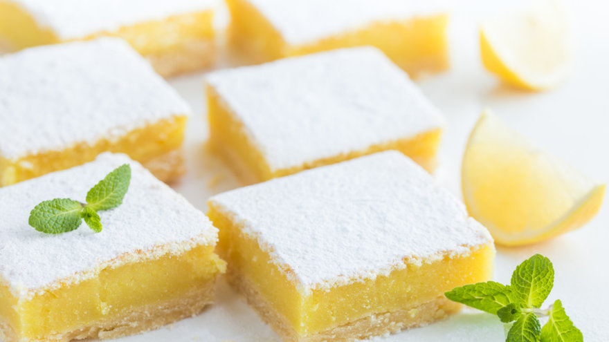

CHINIRECETAS
Cuadraditos de limon

Nada más rico que combinar lo ácido con lo dulce, y nada mejor que estos Cuadraditos de limón para hacerlo! Para acompañar con el mate, café o té en la merienda. Qué rico!
INGREDIENTES
Para la base
- 200g de manteca a temeratura ambiente
- 250g de harina 0000
- 70g de azucar impalpable
Para el relleno:
- 100g de harina 0000
- 375g de azucar
- 4 huevos
- Ralladura de 2 limones
- Azucar impalpable para espolvorear
Te dejamos la receta de estos ✨🍋 CUADRADOS DE LIMÓN 🍋✨ riquísimos 🙌 para disfrutar en la merienda con un café ☕
PREPARACION:
-
Hacer un arenado con la manteca a temperatura ambiente, harina y azúcar impalpable.Hacer un arenado con la manteca a temperatura ambiente, harina y azúcar impalpable.
-
Forrar la placa (que tiene que estar previamente enmantecada y/o forrada con papel manteca o aluminio) con el arenado. Presionar con las manos y tirar bien hacia los costado para formar los bordes.
- Cocinar a 180 grados por 15 a 20 min. O hasta que esté dorada.
-
Mientras hacer el relleno con la harina, azúcar, huevos. Integrar.
- Agregar la ralladura y jugo de limón.
- Verter sobre la base que ya salió del horno.
-
Cocinar a 160ºC por 22 a 25 min o hasta que el relleno no se mueva.
- Dejar enfriar antes de cortarlos.
- Espolvorear con azúcar impalpable.